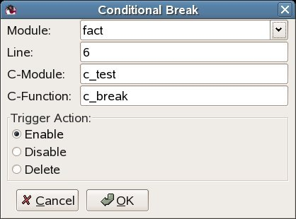
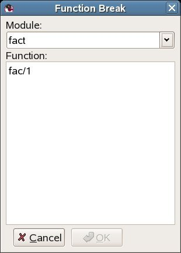
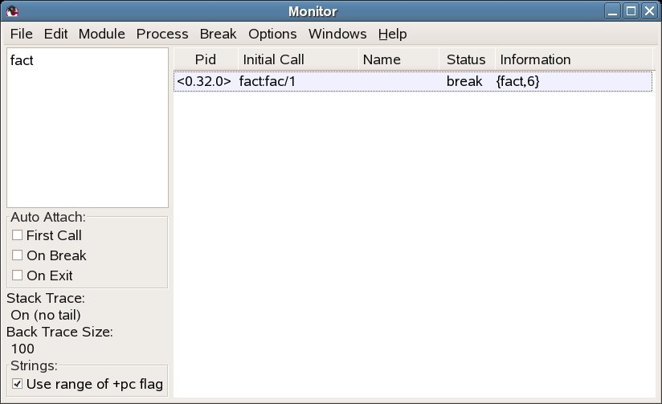
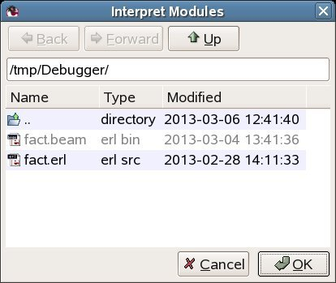
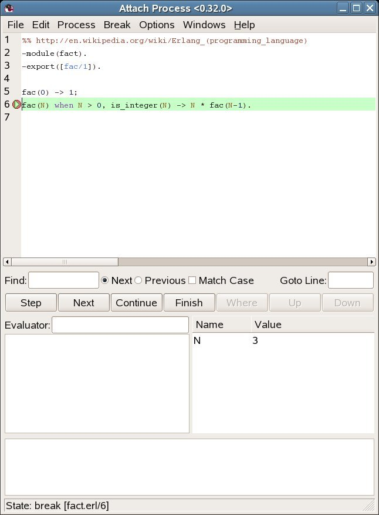
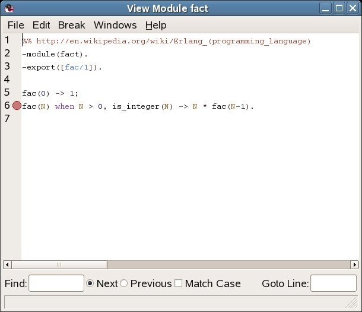

Debugger
View SourceGetting Started
To use Debugger, the basic steps are as follows:
Step 1. Start Debugger by calling debugger:start().
The Monitor window is displayed with information about all debugged processes, interpreted modules, and selected options. Initially there are normally no debugged processes. First, it must be specified which modules that are to be debugged (also called interpreted). Proceed as follows:
Step 2. Select Module > Interpret... in the Monitor window.
The Interpret Modules window is displayed.
Step 3. Select the appropriate modules from the Interpret Dialog window.
Note
Only modules compiled with option debug_info set can be interpreted.
Non-interpretable modules are displayed within parenthesis in the Interpret
Modules window.
Step 4. In the Monitor window, select Module > the module to be interpreted > View.
The contents of the source file is displayed in the View Module window.
Step 5. Set the breakpoints, if any.
Step 6. Start the program to be debugged. This is done the normal way from the Erlang shell.
All processes executing code in interpreted modules are displayed in the Monitor window.
Step 7. To attach to one of these processes, double-click it, or select the process and then choose Process > Attach. Attaching to a process opens an Attach Process window for this process.
Step 8. From the Attach Process window, you can control the process execution, inspect variable values, set breakpoints, and so on.
Breakpoints and Break Dialog Windows
Once the appropriate modules are interpreted, breakpoints can be set at relevant locations in the source code. Breakpoints are specified on a line basis. When a process reaches a breakpoint, it stops and waits for commands (Step, Skip, Continue ...) from the user.
Note
When a process reaches a breakpoint, only that process is stopped. Other processes are not affected.
Breakpoints are created and deleted using the Break menu of either the Monitor window, View Module window, or Attach Process window.
Executable Lines
To have an effect, a breakpoint must be set at an executable line, which is a
line of code containing an executable expression such as a matching or a
function call. A blank line or a line containing a comment, function head, or
pattern in a case statement or receive statement is not executable.
In the following example, lines 2, 4, 6, 8, and 11 are executable lines:
1: is_loaded(Module,Compiled) ->
2: case get_file(Module,Compiled) of
3: {ok,File} ->
4: case code:which(Module) of
5: ?TAG ->
6: {loaded,File};
7: _ ->
8: unloaded
9: end;
10: false ->
11: false
12: end.Status and Trigger Action
A breakpoint can be either active or inactive. Inactive breakpoints are ignored.
Each breakpoint has a trigger action that specifies what is to happen when a process has reached it (and stopped):
- Enable - Breakpoint is to remain active (default).
- Disable - Breakpoint is to be made inactive.
- Delete - Breakpoint is to be deleted.
Line Breakpoints
A line breakpoint is created at a certain line in a module.
Right-click the Module entry to open a popup menu from which the appropriate module can be selected.
A line breakpoint can also be created (and deleted) by double-clicking the line when the module is displayed in the View Module window or Attach Process window.
Conditional Breakpoints
A conditional breakpoint is created at a certain line in the module, but a process reaching the breakpoint stops only if a specified condition is true.
The condition is specified by the user as a module name CModule and a function
name CFunction. When a process reaches the breakpoint,
CModule:CFunction(Bindings) is evaluated. If and only if this function call
returns true, the process stops. If the function call returns false, the
breakpoint is silently ignored.
Bindings is a list of variable bindings. To retrieve the value of Variable
(given as an atom), use function
int:get_binding(Variable, Bindings). The function
returns unbound or {value,Value}.

Right-click the Module entry to open a popup menu from which the appropriate module can be selected.
Example:
A conditional breakpoint calling c_test:c_break/1 is added at line 6 in module
fact. Each time the breakpoint is reached, the function is called. When N is
equal to 3, the function returns true and the process stops.
Extract from fact.erl:
5. fac(0) -> 1;
6. fac(N) when N > 0, is_integer(N) -> N * fac(N-1).Definition of c_test:c_break/1:
-module(c_test).
-export([c_break/1]).
c_break(Bindings) ->
case int:get_binding('N', Bindings) of
{value, 3} ->
true;
_ ->
false
end.Function Breakpoints
A function breakpoint is a set of line breakpoints, one at the first line of each clause in the specified function.

To open a popup menu from which the appropriate module can be selected, right-click the Module entry.
To bring up all functions of the module in the listbox, click the OK button (or press the Return or Tab key) when a module name has been specified,.
Stack Trace
The Erlang emulator keeps track of a stack trace, information about recent function calls. This information is used if an error occurs, for example:
1> catch a+1.
{'EXIT',{badarith,[{erlang,'+',[a,1],[]},
{erl_eval,do_apply,6,[{file,"erl_eval.erl"},{line,573}]},
{erl_eval,expr,5,[{file,"erl_eval.erl"},{line,357}]},
{shell,exprs,7,[{file,"shell.erl"},{line,674}]},
{shell,eval_exprs,7,[{file,"shell.erl"},{line,629}]},
{shell,eval_loop,3,[{file,"shell.erl"},{line,614}]}]}}For details about the stack trace, see section Errors and Error Handling in the Erlang Reference Manual.
Debugger emulates the stack trace by keeping track of recently called interpreted functions. (The real stack trace cannot be used, as it shows which functions of Debugger have been called, rather than which interpreted functions.)
This information can be used to traverse the chain of function calls, using the Up and Down buttons in the Attach Process window.
By default, Debugger only saves information about recursive function calls, that is, function calls that have not yet returned a value (option Stack On, No Tail).
Sometimes, however, it can be useful to save all calls, even tail-recursive calls. This is done with option Stack On, Tail. Notice that this option consumes more memory and slows down execution of interpreted functions when there are many tail-recursive calls.
To turn off the Debugger stack trace facility, select option Stack Off.
Note
If an error occurs, the stack trace becomes empty in this case.
For information about how to change the stack trace option, see section Monitor Window.
Monitor Window
The Monitor window is the main window of Debugger and displays the following:
A listbox containing the names of all interpreted modules
Double-clicking a module brings up the View Module window.
Which options are selected
Information about all debugged processes, that is, all processes that have been or are executing code in interpreted modules

The Auto Attach boxes, Stack Trace label, Back Trace Size label, and Strings box display some options set. For details about these options, see section Options Menu.
Process Grid
Pid - The process identifier.
Initial Call - The first call to an interpreted function by this process. (
Module:Function/Arity)Name - The registered name, if any. If a registered name is not displayed, it can be that Debugger received information about the process before the name was registered. Try selecting Edit > Refresh.
Status - The current status, one of the following:
idle - The interpreted function call has returned a value, and the process is no longer executing interpreted code.
running - The process is running.
waiting - The process is waiting in a
receivestatement.break - The process is stopped at a breakpoint.
exit - The process has terminated.
no_conn - There is no connection to the node where the process is located.
Information - More information, if any. If the process is stopped at a breakpoint, the field contains information about the location
{Module,Line}. If the process has terminated, the field contains the exit reason.
File Menu
Load Settings... - Tries to load and restore Debugger settings from a file previously saved using Save Settings... (see below). Any errors are silently ignored.
Notice that settings saved by Erlang/OTP R16B01 or later cannot be read by Erlang/OTP R16B or earlier.
Save Settings... - Saves Debugger settings to a file. The settings include the set of interpreted files, breakpoints, and the selected options. The settings can be restored in a later Debugger session using Load Settings... (see above). Any errors are silently ignored.
Exit - Stops Debugger.
Edit Menu
Refresh - Updates information about debugged processes. Information about all terminated processes are removed from the window. All Attach Process windows for terminated processes are closed.
Kill All - Terminates all processes listed in the window using
exit(Pid, kill).
Module Menu
Interpret... - Opens the Interpret Modules window, where new modules to be interpreted can be specified.
Delete All - Stops interpreting all modules. Processes executing in interpreted modules terminate.
For each interpreted module, a corresponding entry is added to the Module menu, with the following submenu:
Delete - Stops interpreting the selected module. Processes executing in this module terminate.
View - Opens a View Module window, displaying the contents of the selected module.
Process Menu
The following menu items apply to the currently selected process, provided it is stopped at a breakpoint (for details, see section Attach Process window):
Step
Next
Continue
Finish
The following menu items apply to the currently selected process:
Attach - Attaches to the process and open an Attach Process window.
Kill - Terminates the process using
exit(Pid, kill).
Break Menu
The items in this menu are used to create and delete breakpoints. For details, see section Breakpoints.
Line Break... - Sets a line breakpoint.
Conditional Break... - Sets a conditional breakpoint.
Function Break... - Sets a function breakpoint.
Enable All - Enables all breakpoints.
Disable All - Disables all breakpoints.
Delete All - Removes all breakpoints.
For each breakpoint, a corresponding entry is added to the Break menu, from which it is possible to disable, enable, or delete the breakpoint, and to change its trigger action.
Options Menu
Trace Window - Sets the areas to be visible in an Attach Process window. Does not affect existing Attach Process windows.
Auto Attach - Sets the events a debugged process is to be attached to automatically. Affects existing debugged processes.
- First Call - The first time a process calls a function in an interpreted module.
- On Exit - At process termination.
- On Break - When a process reaches a breakpoint.
Stack Trace - Sets the stack trace option, see section Stack Trace. Does not affect existing debugged processes.
- Stack On, Tail - Saves information about all current calls.
- Stack On, No Tail - Saves information about current calls, discarding previous information when a tail recursive call is made.
- Stack Off - Does not save any information about current calls.
Strings - Sets the integer lists to be printed as strings. Does not affect existing debugged processes.
Back Trace Size... - Sets how many call frames to be fetched when inspecting the call stack from the Attach Process window. Does not affect existing Attach Process windows.
Windows Menu
Contains a menu item for each open Debugger window. Selecting one of the items raises the corresponding window.
Help Menu
- Help - Shows the Debugger documentation. This function requires a web browser.
Interpret Modules Window
The Interpret Modules window is used for selecting which modules to interpret.
Initially, the window displays the modules (erl files) and subdirectories of
the current working directory.
Interpretable modules are modules for which a .beam file, compiled with option
debug_info set, is located in the same directory as the source code, or in an
ebin directory next to it.
Modules for which these requirements are not fulfilled are not interpretable and are therefore displayed within parentheses.
Option debug_info causes debug information or abstract code to be added to
the .beam file. This increases the file size and makes it possible to
reconstruct the source code. It is therefore recommended not to include debug
information in code aimed for target systems.
An example of how to compile code with debug information using erlc:
% erlc +debug_info module.erlAn example of how to compile code with debug information from the Erlang shell:
4> c(module, debug_info).
To browse the file hierarchy and interpret the appropriate modules, either
select a module name and click Choose (or press carriage return), or
double-click the module name. Interpreted modules have the type erl src.
To interpret all displayed modules in the chosen directory, click All.
To close the window, click Done.
Note
When Debugger is started in global mode (which is the default, see
debugger:start/0), modules added (or deleted) for interpretation are added
(or deleted) on all known Erlang nodes.
Attach Process Window
From an Attach Process window, you can interact with a debugged process. One window is opened for each process that has been attached to. Notice that when attaching to a process, its execution is automatically stopped.

The window is divided into the following five parts:
The Code area, displaying the code being executed. The code is indented and each line is prefixed with its line number. If the process execution is stopped, the current line is marked with
-->. An existing break point at a line is marked with a stop symbol. In the example shown in the illustration, the execution stopped at line 6, before the execution offac/1.Active breakpoints are displayed in red and inactive breakpoints in blue.
The Button area, with buttons for quick access to frequently used functions in the Process menu.
The Evaluator area, where you can evaluate functions within the context of the debugged process, if that process execution is stopped.
The Bindings area, displaying all variables bindings. If you click a variable name, the value is displayed in the Evaluator area. Double-click a variable name to open a window where the variable value can be edited. Notice however that pid, port, reference, or fun values cannot be edited unless they can be represented in the running system.
The Trace area, which displays a trace output for the process.
++ (N) <L>- Function call, whereNis the call level andLthe line number.-- (N)- Function return value.
==> Pid : Msg- The messageMsgis sent to processPid.<== Msg- The messageMsgis received.++ (N) receive- Waiting in areceive.++ (N) receive with timeout- Waiting in areceive...after.
The Trace area also displays Back Trace, a summary of the current function calls on the stack.
Using the Options menu, you can set which areas to be displayed. By default, all areas except the Trace area are displayed.
File Menu
- Close - Closes this window and detach from the process.
Edit Menu
Go to line... - Goes to a specified line number.
Search... - Searches for a specified string.
Process Menu
Step - Executes the current code line, stepping into any (interpreted) function calls.
Next - Executes the current code line and stop at the next line.
Continue - Continues the execution.
Finish - Continues the execution until the current function returns.
Skip - Skips the current code line and stop at the next line. If used on the last line in a function body, the function returns
skipped.Time Out - Simulates a time-out when executing a
receive...afterstatement.Stop - Stops the execution of a running process, that is, make the process stop at a breakpoint. The command takes effect (visibly) the next time the process receives a message.
Where - Verifies that the current location of the execution is visible in the code area.
Kill - Terminates the process using
exit(Pid, kill).Messages - Inspects the message queue of the process. The queue is displayed in the Evaluator area.
Back Trace - Displays the back trace of the process, a summary of the current function calls on the stack, in the Trace area. Requires that the Trace area is visible and that the Stack Trace option is Stack On, Tail or Stack On, No Tail.
Up - Inspects the previous function call on the stack, showing the location and variable bindings.
Down - Inspects the next function call on the stack, showing the location and variable bindings.
Options Menu
Trace Window - Sets which areas are to be visible. Does not affect other Attach Process windows.
Stack Trace - Same as in the Monitor window, but only affects the debugged process the window is attached to.
Strings - Same as in the Monitor window, but only affects the debugged process the window is attached to.
Back Trace Size... - Sets how many call frames are to be fetched when inspecting the call stack. Does not affect other Attach Process windows.
Break, Windows, and Help Menus
The Break, Windows, and Help menus are the same as in the Monitor Window, except that the Breaks menu applies only to local breakpoints.
View Module Window
The View Module window displays the contents of an interpreted module and makes it possible to set breakpoints.

The source code is indented and each line is prefixed with its line number.
Clicking a line highlights it and selects it to be the target of the breakpoint functions available from the Break menu. To set a line breakpoint on a line, double-click it. To remove the breakpoint, double-click the line with an existing breakpoint.
Breakpoints are marked with a stop symbol.
File and Edit Menus
The File and Edit menus are the same as in the Attach Process Window.
Break, Windows, and Help Menus
The Break, Windows, and Help menus are the same as in the Monitor Window, except that the Break menu applies only to local breakpoints.
Performance
Execution of interpreted code is naturally slower than for regularly compiled modules. Using Debugger also increases the number of processes in the system, as for each debugged process another process (the meta process) is created.
It is also worth to keep in mind that programs with timers can behave differently when debugged. This is especially true when stopping the execution of a process (for example, at a breakpoint). Time-outs can then occur in other processes that continue execution as normal.
Code Loading Mechanism
Code loading works almost as usual, except that interpreted modules are also stored in a database and debugged processes use only this stored code. Reinterpreting an interpreted module results in the new version being stored as well, but does not affect existing processes executing an older version of the code. This means that the code replacement mechanism of Erlang does not work for debugged processes.
Debugging Remote Nodes
By using debugger:start/1, you can specify if Debugger is to be started in
local or global mode:
debugger:start(local | global)If debugger:start/0 is called, Debugger starts in global mode.
In local mode, code is interpreted only on the current node. In global mode, code is interpreted on all known nodes. Processes on other nodes executing interpreted code are automatically displayed in the Monitor window and can be attached to like any other debugged process.
Note
It not recommended to start Debugger in global mode on more than one node in a network, as the nodes interfere with each other, leading to inconsistent behavior.